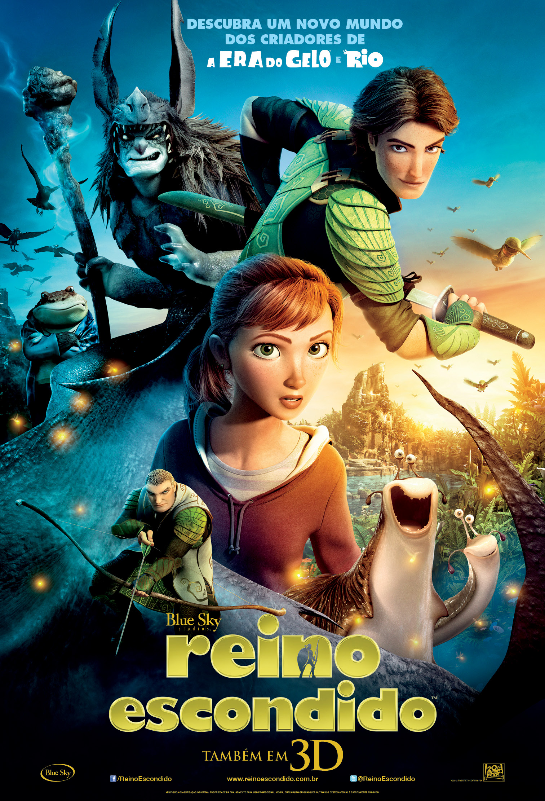

O Reino Escondido. |
|
|  | Gênero. Animação |
| Sinopse. O professor Bomba (Jason Sudeikis) dedicou boa parte de sua vida às pesquisas por um povo de tamanho diminuto, que vive na floresta e cujos movimentos são rápidos demais para serem registrados pelo olho humano. Apesar de ter encontrado alguns indícios de que estes seres existem, como armas e selas de pássaros, o professor é alvo de piadas no meio científico. |
|
| Diretor. Chris Wedge. | |
| Elenco. Amanda Seyfried (Maria Catarina), Josh Hutcherson (Nod), Steven Tyler (Nim Galuu), Colin Farrel (Ronin). |
|
| Dia de Lançamento. 17 de Maio de 2013. |
|
| |
|
 
   |
|